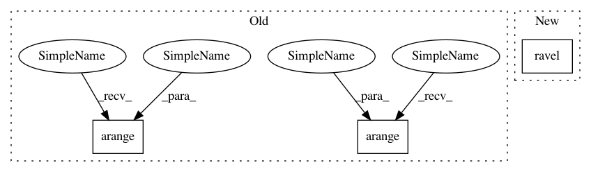

c1c31db36facdf8d557f4dcc69866ac86814b83f,pynndescent/pynndescent_.py,NNDescent,_init_search_graph,#NNDescent#,900
Before Change
// Eliminate the diagonal
n_vertices = self._search_graph.shape[0]
self._search_graph[np.arange(n_vertices), np.arange(n_vertices)] = 0.0
self._search_graph.eliminate_zeros()
After Change
diversified_data[diversified_data == 0.0] = FLOAT32_EPS
self._search_graph.row = np.repeat(np.arange(diversified_rows.shape[0], dtype=np.int32), diversified_rows.shape[1])
self._search_graph.col = diversified_rows.ravel()
self._search_graph.data = diversified_data.ravel()
// Get rid of any -1 index entries
self._search_graph = self._search_graph.tocsr()
In pattern: SUPERPATTERN
Frequency: 3
Non-data size: 3
Instances
Project Name: lmcinnes/pynndescent
Commit Name: c1c31db36facdf8d557f4dcc69866ac86814b83f
Time: 2020-09-01
Author: leland.mcinnes@gmail.com
File Name: pynndescent/pynndescent_.py
Class Name: NNDescent
Method Name: _init_search_graph
Project Name: rtavenar/tslearn
Commit Name: ba1182eeaaadb1805319166022128f4823f491f9
Time: 2017-06-22
Author: romain.tavenard@univ-rennes2.fr
File Name: tslearn/docs/examples/plot_barycenters.py
Class Name:
Method Name:
Project Name: rtavenar/tslearn
Commit Name: ba1182eeaaadb1805319166022128f4823f491f9
Time: 2017-06-22
Author: romain.tavenard@univ-rennes2.fr
File Name: tslearn/docs/examples/plot_sax.py
Class Name:
Method Name: